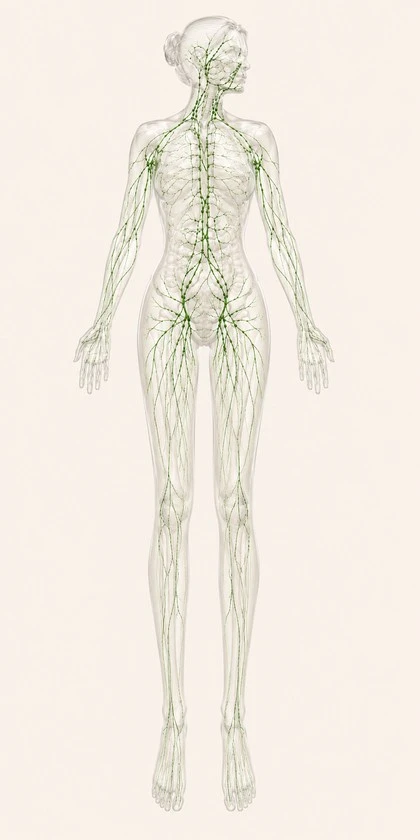

Sélectionnez la zone qui vous préoccupe pour démarrer votre bilan personnalisé.

Cliquez sur une zone pour commencer
Question 1 sur 6
Question 1 / 6
Question 2 / 6
Dans la journée, ce que vous ressentez...
Question 3 / 6
Ce qui aggrave ou déclenche clairement ce que vous ressentez...
Question 4 / 6
Si vous décrivez l'évolution dans le temps...
Question 5 / 6
Dans votre quotidien, ce qui vous ressemble le mieux...
Question 6 / 6
Ce que vous cherchez avant tout dans cet accompagnement...
Votre profil est prêt
Laissez votre adresse pour recevoir votre bilan complet directement dans votre boîte mail — ou continuez sans si vous préférez.
Votre adresse n'est utilisée que pour vous envoyer ce bilan. Elle n'est enregistrée dans aucune base de données et ne sera jamais utilisée à des fins commerciales.
Ce que votre profil révèle
Soin recommandé
Ce que dit la science
L'Initiale — Chaque première séance fait l'objet d'un bilan approfondi pour affiner et cibler le mieux possible votre accompagnement. Ce profil est une première orientation, pas une prescription.
Prête à commencer ? Réservez l'Initiale
La première séance est un bilan complet, conçu pour construire un protocole vraiment sur mesure pour votre corps.